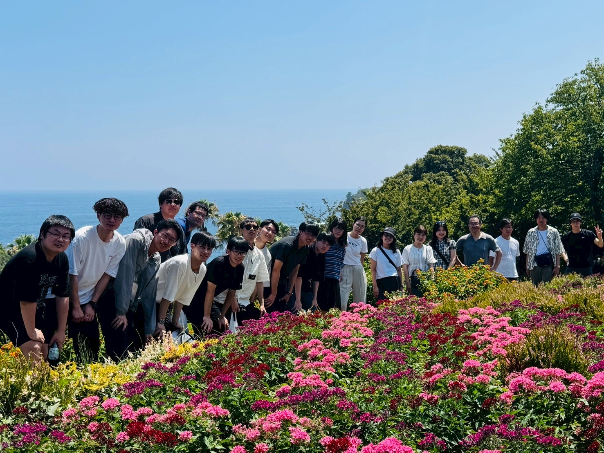
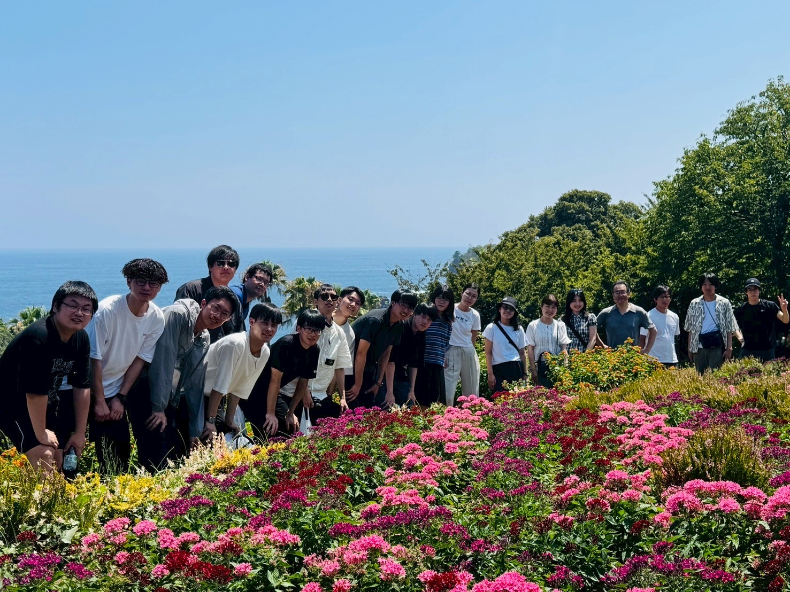

Laboratory Activities
-
Year-End Party @ Ishikawa Lab (December 12, 2025)
We held our 2025 year-end party.
 ※Images were generated by GPT based on member characteristics.
※Images were generated by GPT based on member characteristics.
-
Summer Camp @ Izu Kogen (August 2-3, 2025)
Ishikawa Laboratory and Otomo Laboratory held a summer camp in Izu Kogen.
 

-
Student Presentations at the Society of Computer Chemistry,
Japan (SCCJ) 2025 Spring Annual Meeting (June 6, 2025)
YANG, CHEN, and Honma presented their research.


-
Student Presentation at SCEJ 2025 Spring Annual Meeting
(March 13, 2025)
YANG presented his research.

-
Visit from Professor Hong-Kang Tian's Laboratory, National
Cheng Kung University (October 17, 2024)
Professor Hong-Kang Tian and members from National Cheng Kung University, Taiwan visited our laboratory.


-
Summer Camp @ Nasu-Shiobara (September 28-29, 2024)
Ishikawa Laboratory and Otomo Laboratory held a summer camp in Nasu-Shiobara.


2025
2024